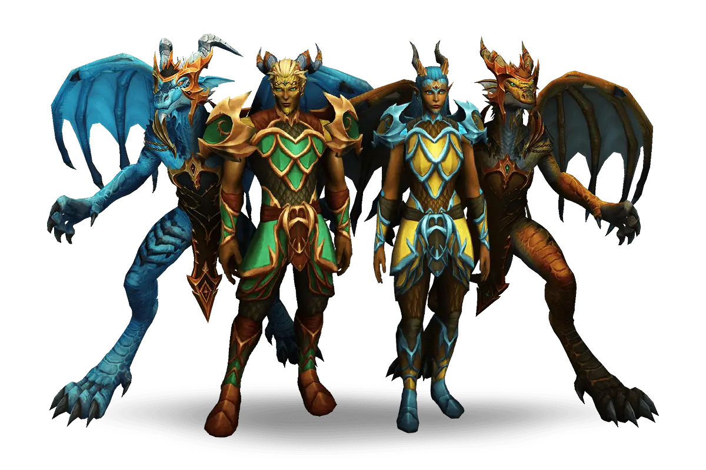

Com a chegada da nova raça chamada drackthyr e suas novas possibilidades de jogabilidade, World of Wacraft se transformou em outro jogo.
A Nova Raça
Com a chegada de dragonflitht veio também a nova raça da expansão, chamada de drackthrys.
E na chegada dos campiões de dano e heal na primeira season de dragonflight, a segunda não poderia
parar por aí, uma nova especialização única no jogo foi criada especialmente para os drackthyr,
O Augmentation. Essa especialização única é um DPS-suporte que é capaz somente de buffar seus aliados
aumentando o dano que sua equipe dá, defesa e cura. Graças a isso a deixou essa especialização extremamente
forte.

Se você considera puxar pedras-chaves míticas, de nível mais alto com seus aliados é sempre bom
ter um Augmentation.
Sendo muito aceitado em pugs de pedras e raides. É incrívelmente facil ser chamado para qualquer
atividade. Claro,
que dependendo da atividade que você irá fazer é bom sim levar em conta seu ilevel. E em sua
grande maioria você só estará lá para buffar sua equipe, então saiba fazer corretamente!
 mas outros tanks não ficam de fora, algumas dungeons são bom outros tanks pela sua utilidade, mas se você
for considerado um tank D (ruim) será muito dificil te chamarem,
mas outros tanks não ficam de fora, algumas dungeons são bom outros tanks pela sua utilidade, mas se você
for considerado um tank D (ruim) será muito dificil te chamarem,